Source at: https://github.com/cirosantilli/gnuplot-examples
animation.gif
animation.gif.png
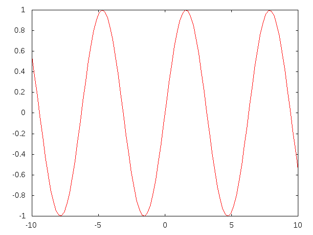border.png
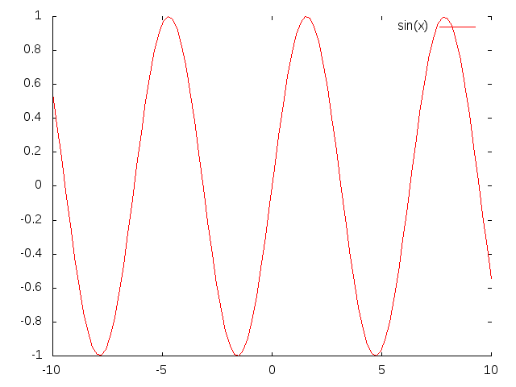columnheader.png
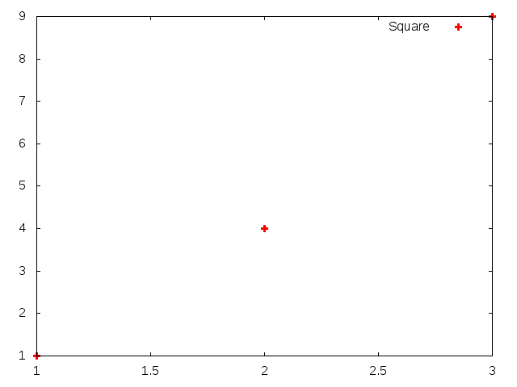data-multiple.png
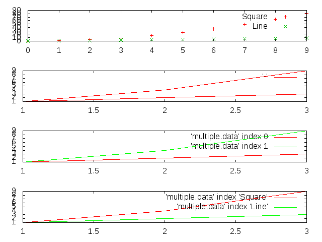data.png
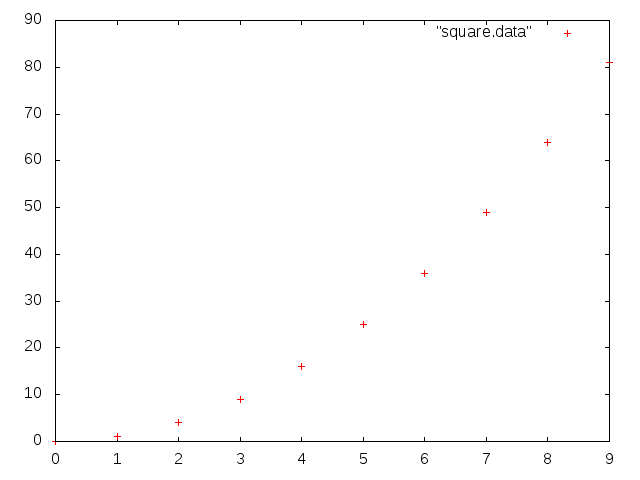index.html
inline-data.png
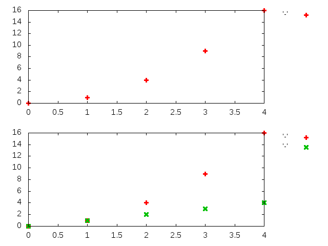key.png
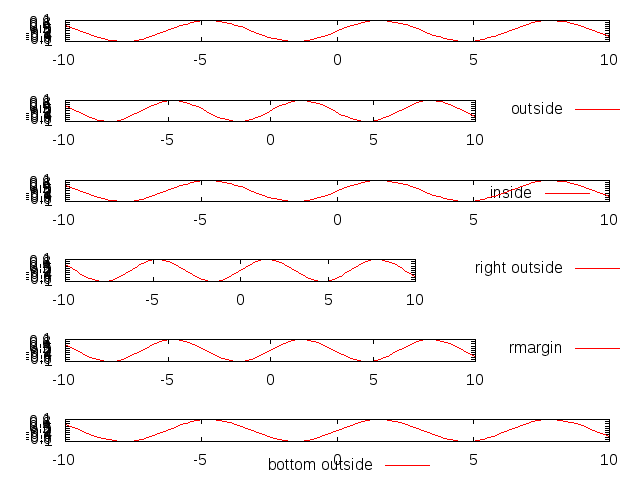key-title.png
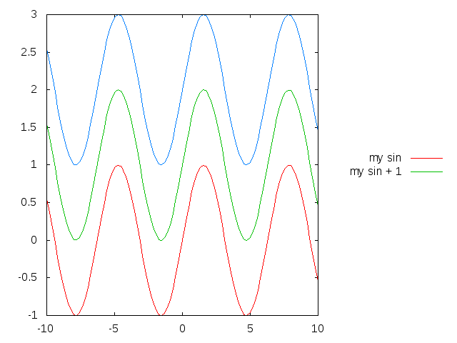label.png
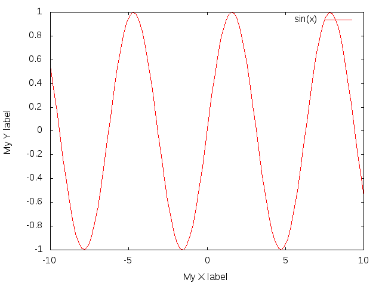linecolor.png
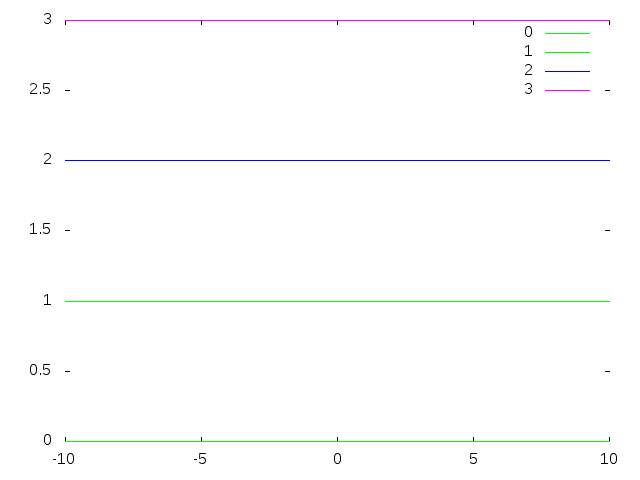linewidth.png
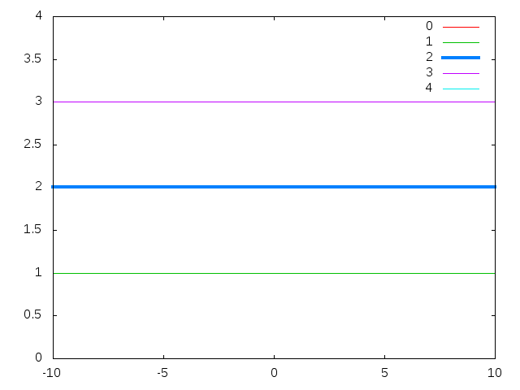logscale.png
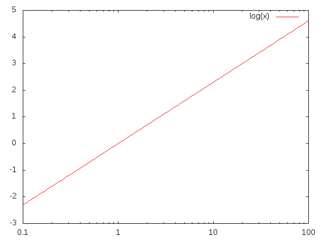min.png
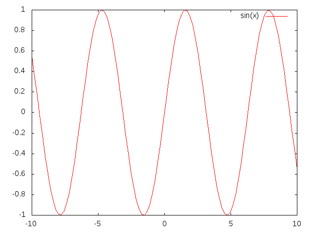multiple.png
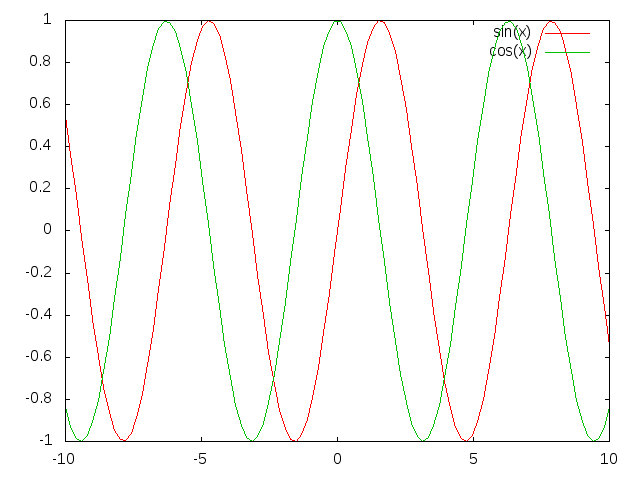multiplot-layout.png
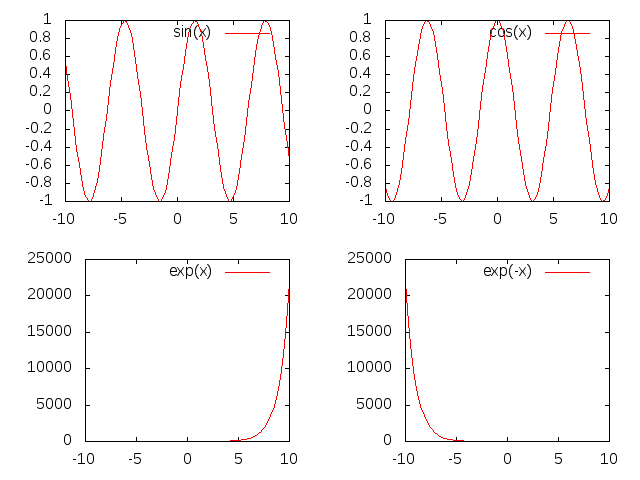object-circle.png
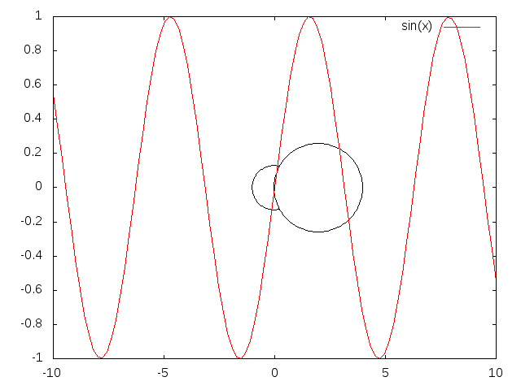offset-graph.png
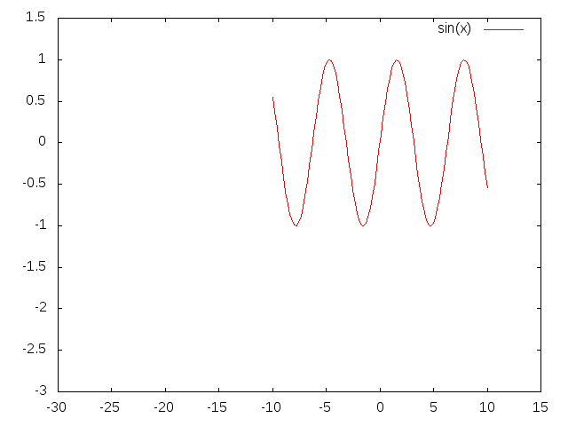palette.png
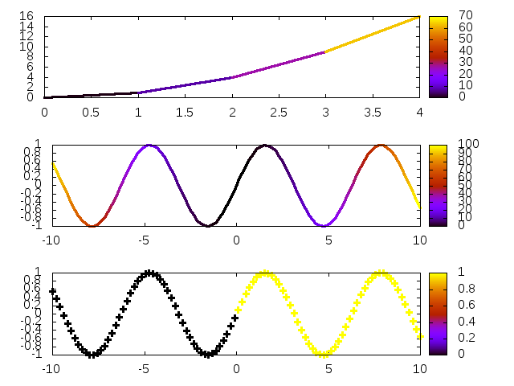pm3d.png
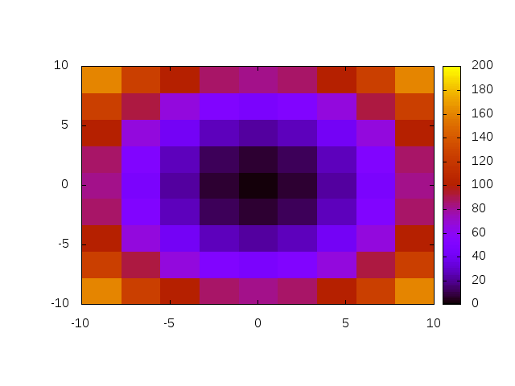pointsize.png
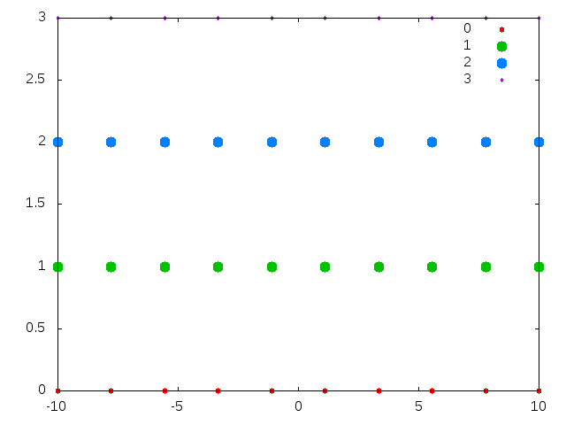pointtype.png
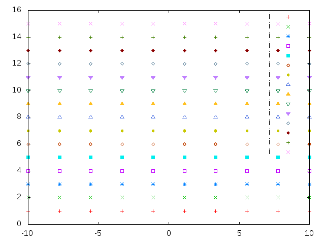range.png
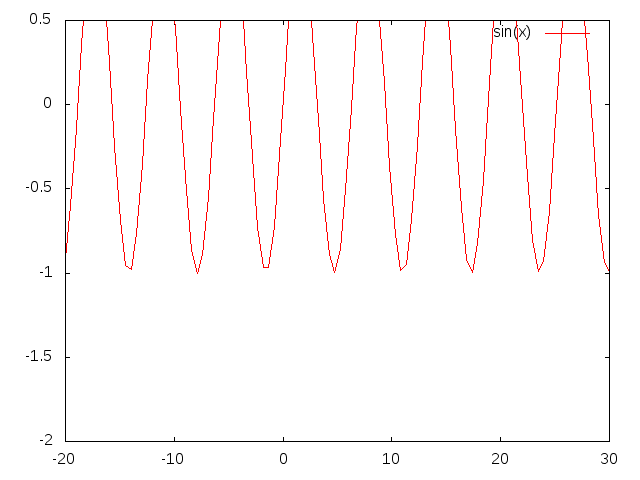replot.png
samples.png
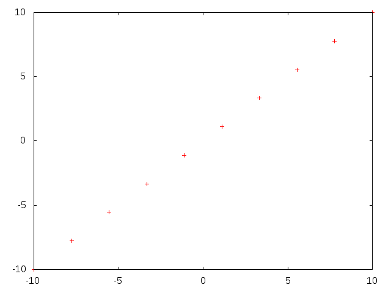splot.png
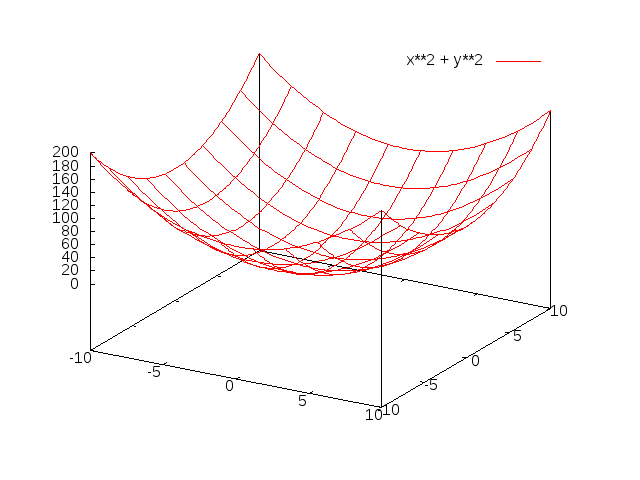title.png
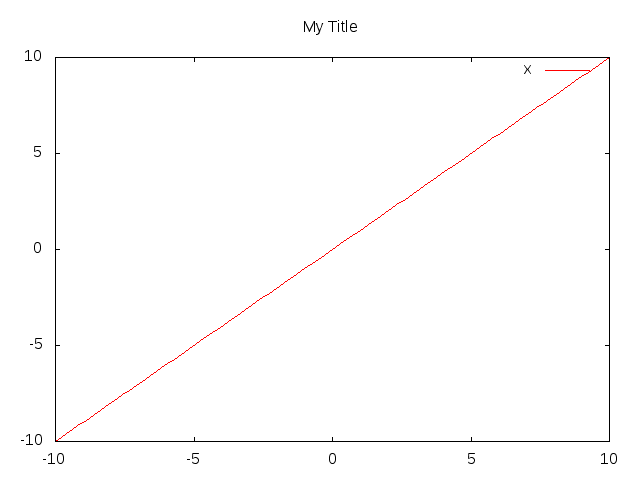with-line.png
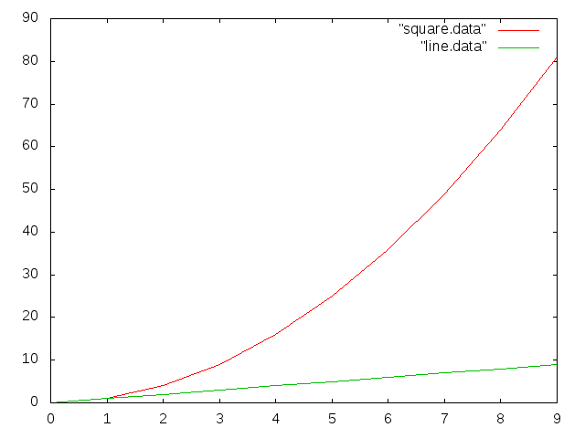with-linespoints.png
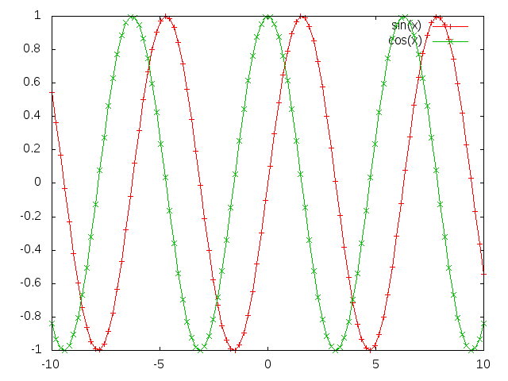with-points.png
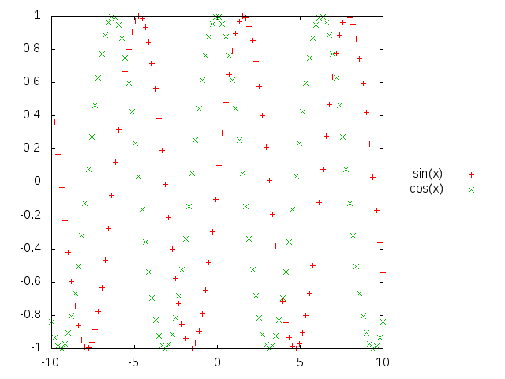